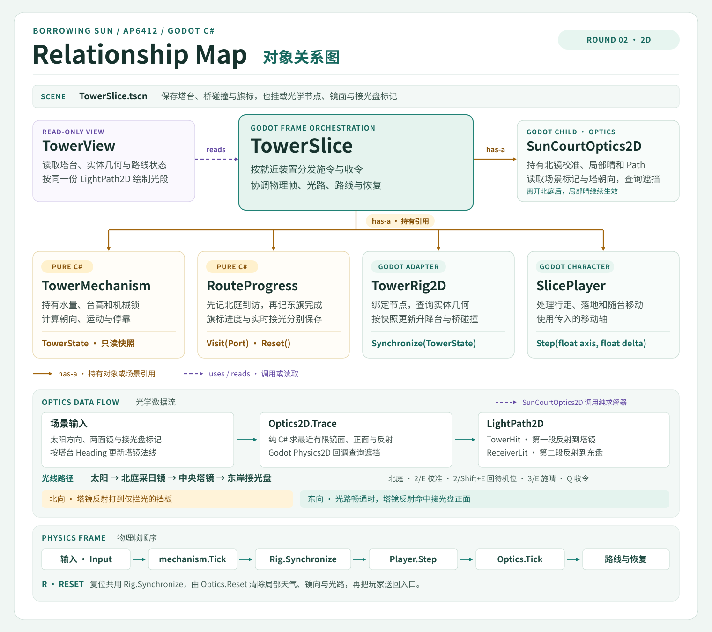
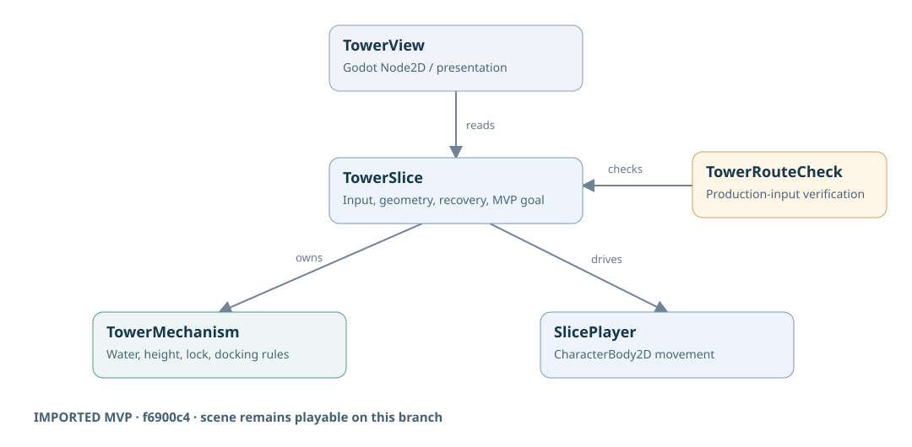
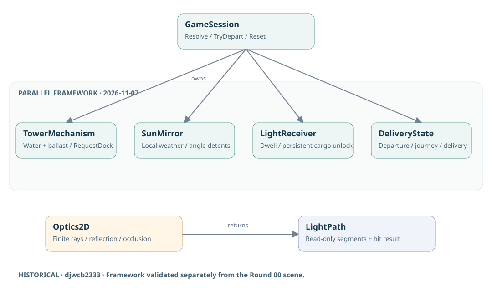
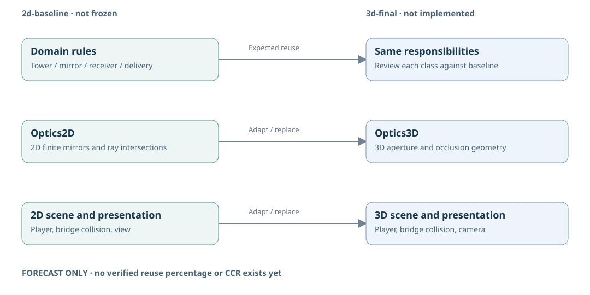

BORROWING SUN · AP6412 · ROUTE B
借晴 · 范围与架构
Round 04 验收候选在完整的 Godot 2D 主线上加入开场说明、就地反馈、结束和重玩。玩家仍用同一份雨水抬塔、配重，搭车把一箱水果送到花庭。
现行玩法参数
接光 1.5 秒，从 6 单位原水转出 4 作配重，车程 3.4 秒。
接光 1.5 秒，从 6 单位原水转出 4 作配重，车程 3.4 秒。
Round 04 待冻结
Windows 验收待完成。两平台验收通过后冻结 2D，Round 05 再制作 3D。
Windows 验收待完成。两平台验收通过后冻结 2D，Round 05 再制作 3D。
01 / CURRENT 2D
Round 04 验收候选 · 对象关系
会话界面响应开场、游玩和交付结束。光学层提供实际接光，货运规则决定发车与交付，Godot 适配同步实体桥与车台。调用与复位顺序 · Round 03 规则整合复测

02 / HISTORICAL REFERENCES
导入灰盒与并行框架
djwcb2333 在 Round 00 导入版上制作候选领域框架、类图、测试和 CCR 工具。左图记录导入灰盒，右图记录该分支的候选架构。11 月 7 日的历史证据


f6900c4

181ec1603 / ROUND 05 FORECAST
待验证的 2D 到 3D 迁移
冻结后用同一组玩法用例对照两版，并按实际源码核对共享、修改、移除和新增。制作顺序 · 统计口径
